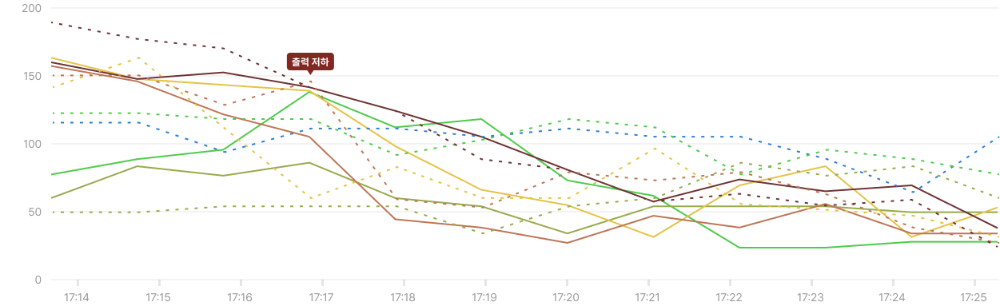
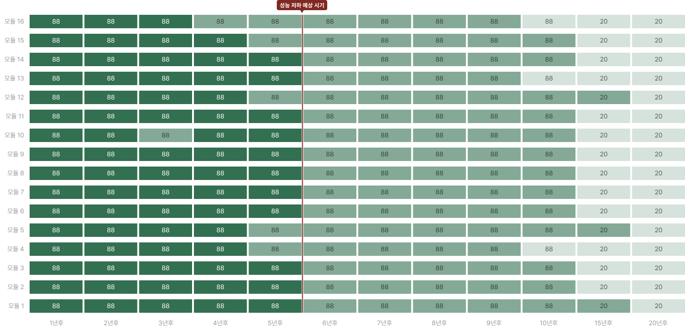

전기버스 배터리
미래상태 예측 시스템
battery_charging_full
배터리 현재 상태
bar_chart
미래 상태 예측
route
노선 분석
schedule
충전 스케줄링
manage_history
운행 일정 설정
settings
설정
people
회원관리
face
마이페이지
노선
선택
360
차량 번호
선택
12고3456
회차
선택
1회차
날짜
미래 상태 기준
search
미래 상태 예측
출고 시기
2020년 8월
예측 결과
6년 후 성능 저하 예상
전압
차트용 소스:
출력 저하

현재 전압
1년 후 예측 전압
2년 후 예측 전압
3년 후 예측 전압
4년 후 예측 전압
5년 후 예측 전압
6년 후 예측 전압
7년 후 예측 전압
8년 후 예측 전압
9년 후 예측 전압
10년 후 예측 전압
배터리 모듈별 상태
check
배터리 팩
check
기준 이하 모듈
차트용 소스:
성능 저하 예상 시기

100 - 61
60 - 31
30 - 0